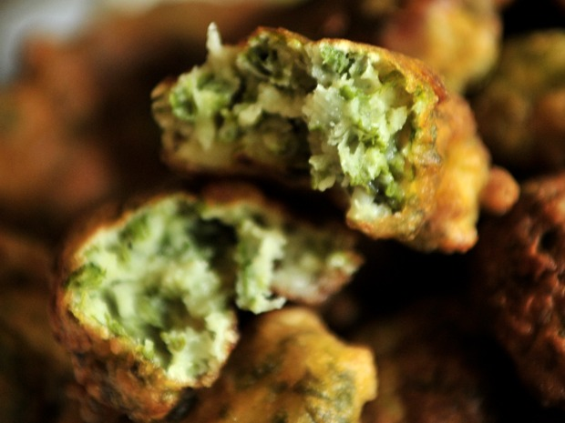

Buñuelos de Acelga

Ingredientes:
5 hojas de acelga
1 cebolla de verdeo
Perejil
Orégano
1 taza de harina
1 cucharadita de polvo de hornear
1 cucharada de aceite
1 cucharada de vinagre de manzana
1/2 taza de leche
Aceite para freir
Preparación:
Picar bien fino todas las verduras y poner en un bol.
Agregar harina con el polvo de hornear, luego el aceite, el vinagre y mezclar con la leche hasta que forme una masa cremosa .
Si queda muy líquida agregar harina.
Calentar el aceite.
Con una cuchara formar los buñuelos y freir hasta que estén dorados.
Colocarlos en papel de cocina absorbente.